Blender 로 만든 가림 장면을 배우면,
VOBench 의 가림도 풀리나
- 질문
- 가림 장면을 직접 만든 데이터 (v3) 로 예측 부분을 더 학습하면, 다른 벤치마크에서도 "가려진 물체가 다시 나온다" 를 더 잘 고르나? 특히 VOBench 에서?
- 답
- Blender 계열 벤치마크는 크게 오른다. VOBench 는 거의 그대로다. 정지한 물체를 지우지 않는 것은 어느 쪽으로 학습해도 옮겨 간다. 움직이는 물체를 새 자리에 놓는 것은 학습한 데이터 밖으로 잘 안 옮겨 간다. Blender → Unreal, Unreal → Blender 양쪽 다 그렇다.
- 다음
- 대조 실험 세 개를 돌리는 중이다. "VOBench 와 닮은 장면만 모으면 풀리나", "시험 장면을 외우면 100 % 가 되나" 를 가른다 (12 절).
이 페이지의 숫자는 모두 "쌍 정답률" 이다
벤치마크는 쌍으로 되어 있다. 쌍 = 앞부분 (문맥) 이 픽셀까지 같고 뒷부분만 다른 두 영상이다.
예: VOBench late 의 사라짐 쌍 하나
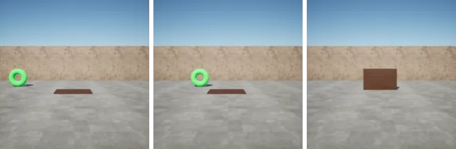


모델은 문맥을 보고 뒷부분을 예측한다. 놀람 = 예측과 실제 뒷부분의 차이다.
정답률 (%) = 그 벤치마크의 쌍 가운데, 모델이 불가능 영상에 더 놀란 쌍의 비율
- 50 % = 동전 던지기. 50 % 아래 = 말이 안 되는 쪽을 더 자연스럽게 본다.
- 이 페이지는 주로 사라짐 쌍 정답률을 쓴다 (2 절).
- 모든 표는 위에 벤치마크 · 무엇의 정답률 · 쌍 수를 적고, 행은 모델과 그 학습 데이터다.
- 표의 † = 그 모델이 학습한 데이터와 같은 분포에서 잰 칸. 일반화로 읽지 않는다.
- 표의 파랑 · 주황 칸 = 눈여겨볼 칸. 기준은 표마다 설명에 적었다.
이 페이지에서 쓰는 말
| 장면 | 같은 설정 (물체 · 가리는 것 · 카메라 · 궤적) 으로 만든 영상 묶음. 장면마다 "물체 있음" · "물체 없음" 영상이 있다. |
| 쌍 | 문맥이 같고 뒷부분만 다른 가능 영상 · 불가능 영상 한 벌. 시험 장면 하나에서 사라짐 쌍 1 개와 나타남 쌍 1 개가 나온다. |
| 사라짐 쌍 | 문맥에 물체가 있다. 불가능 영상에서는 가림이 끝나도 물체가 안 나온다. |
| 나타남 쌍 | 문맥에 물체가 없다. 불가능 영상에서는 가림 뒤에서 물체가 나온다. 거의 모든 모델이 99–100 % 라 따로 다루지 않는다. |
| 샘플 · 튜블릿 | 샘플 = 모델이 읽는 프레임 한 장 (32 샘플, 초당 10 장). 0–15 가 문맥, 16–31 이 미래. 튜블릿 = 연속한 샘플 2 개 (미래 = 튜블릿 8 개). |
| 토큰 | 화면을 16 × 16 으로 나눈 칸 하나. 1 토큰 = 16 픽셀 (256 픽셀 화면). |
| late 가림 | 문맥의 마지막 샘플에서 물체가 가려져 있는 상태. |
| 정지 · 움직임 | 문맥에서 물체 (가려지는 것) 가 서 있나 움직이나. |
| 재등장 시점 · 자리 | 가려졌던 물체가 다시 보이는 첫 샘플과 그때 화면 위치. |
| 등속 외삽 오차 | 마지막으로 보인 위치와 속도로 곧게 이어 간 예상 자리와 실제 자리의 거리. 작을수록 다시 나올 자리를 맞히기 쉽다. |
| 운동 틀 · 틀 궤적 | 운동 틀 = VOBench 가 쓰는 정해진 운동 6 가지 (정지 · 등속 · 가속 · 감속 · 빗면 오름 · 내림). 틀 궤적 = 방향 · 운동 종류가 같은 학습 장면들의 평균 미래 경로 (9 절). |
| 경로 일치 | 시험 장면의 미래에서 물체가 지나가는 토큰 칸 순서가 학습 장면 중 하나와 똑같다 (9 절). |
| 복사 기준선 | 예측 없이 마지막 문맥 샘플을 미래 자리에 그대로 둔 것. 벤치마크가 예측 없이 얼마나 풀리는지 잰다. |
| Blender 학습 모델 | v3 섞음 · trapdoor 25 % · trapdoor 만 세 모델을 함께 부르는 말 (5 절). |
| 확실 | 같은 쌍에서 한 모델만 맞힌 수의 차이가 우연으로 나올 확률이 5 % 미만 (McNemar 정확 검정). |
| 근거 표시 | 측정 산출물에서 잰 값 · 이론 채점 식에서 따라 나옴 · 추측 아직 확인 안 함. |
측정으로 확인한 것 다섯 가지
v3 로 학습하면 Blender 계열 벤치마크가 크게 오른다. v3 시험 전체 쌍 (3,438): 원래 58.9 → v3 섞음 88.0 %. CLEVRER style 전체 쌍 (612): 51.3 → 82.5 %. 측정 → 7 절
v3 시험의 움직이는 물체 사라짐 쌍 (1,262) 은 v3 섞음이 68.5 % 만 맞힌다. 다시 나올 자리를 맞히기 어려운 쌍일수록 틀린다. 경로가 학습에 있으면 74.8 %, 없으면 62.3 % 다. 외울 수 있으면 도움은 되지만 100 % 에는 한참 못 미친다. 측정 → 9 절
정지한 물체를 지우지 않는 것은 어느 쪽으로 학습해도 옮겨 간다. VOBench late 정지 사라짐 쌍 (6): Blender 학습 모델 100 % (원래 83.3). Blender trapdoor 시험의 정지 · 가까이 사라짐 쌍 (231): VOBench 학습 모델 71.9 % (원래 61.9). 측정 → 10 절
움직이는 물체를 새 자리에 놓는 것은 학습한 데이터 밖으로 잘 안 옮겨 간다. 양방향이다. VOBench late 움직임 사라짐 쌍 (30): Blender 학습 모델 0–13 % (원래 0). Blender trapdoor 시험 움직임 사라짐 쌍 (187): VOBench 학습 모델 29.9 % (원래 10.2). 가림 시점 · 자리 난이도 · 판 크기 · 물체 크기는 이유가 아니고, VOBench 와 가장 닮은 Blender 장면만 학습해도 10 % 다 (대조 실험 ①). 측정 → 10 · 11 절
IntPhys 1 · 2 와 실제 촬영 영상은 어떤 학습으로도 움직이지 않는다. 1차 결과와 같다. 측정 → 7 절
v3: 조건을 하나씩 조절해 만든 Blender 가림 장면
모든 장면이 late 가림이다. 장면마다 영상 둘을 만든다: 물체가 있는 영상, 같은 장면에서 물체만 뺀 영상. 학습에는 이 두 가능 영상만 쓴다.
20 fps · 64 프레임 · 256 픽셀. 모델은 한 프레임씩 건너 32 샘플 (3.2 초) 을 읽는다. v3 7,136 장면. trapdoor 1,528 장면은 VOBench 와 같은 가림 방식이라 나중에 따로 만들었다.
- 물체 모양: 기본 도형 · 실제 물건
- 카메라: 정면 · 측면 (30–60°) · 위에서. 카메라는 늘 물체가 가려지는 자리를 화면 가운데에 둔다.
- 가림 종류: 가림막 (판 · 벽 · 탁자 · 레일 판) · 다른 물체 (서 있는 물체 · 굴러오는 공) · trapdoor (누운 판이 일어섰다 다시 눕는다)
- 가림 움직임 (고정 · 움직임) · 물체 움직임 (움직임 · 정지) · 가림 길이 (짧게 · 길게)
- 장소: 평지 · 빗면 (5–12°, 물체가 움직이는 장면만). 빗면에는 오르막 (아래에서 굴려 올리면 꼭대기에서 되돌아옴) 과 내리막 (꼭대기 근처에서 놓음) 이 둘 다 있다. v3 학습 1,981 장면 (오르막 1,270 · 내리막 711), trapdoor 학습 489 장면 (283 · 206).
예시는 같은 생성기로 만든 시험 장면의 가능 영상이다. 왼쪽 세 장 = 문맥, 오른쪽 세 장 = 맞혀야 하는 뒷부분.
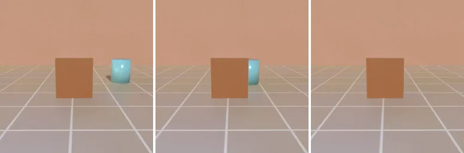
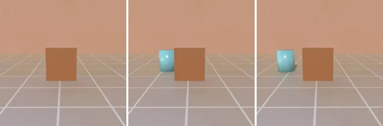
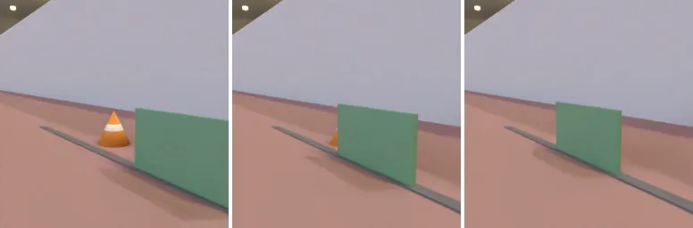
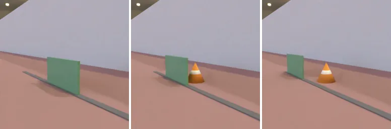
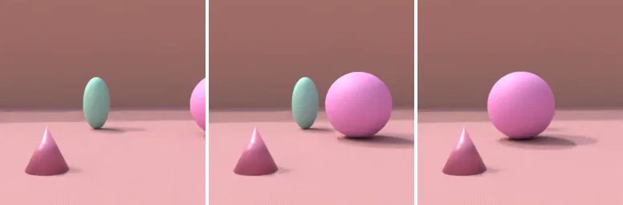
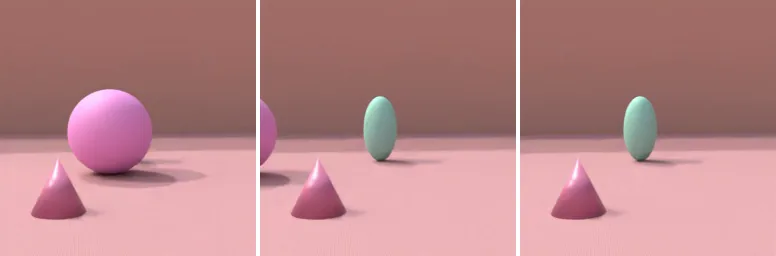
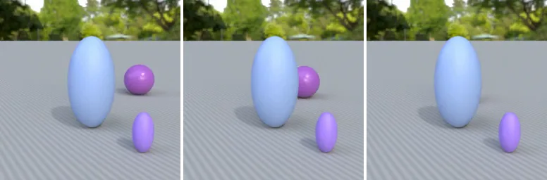
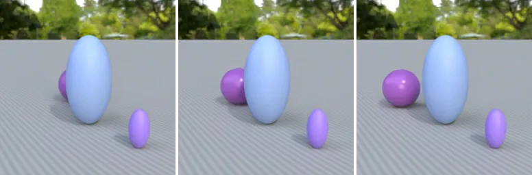
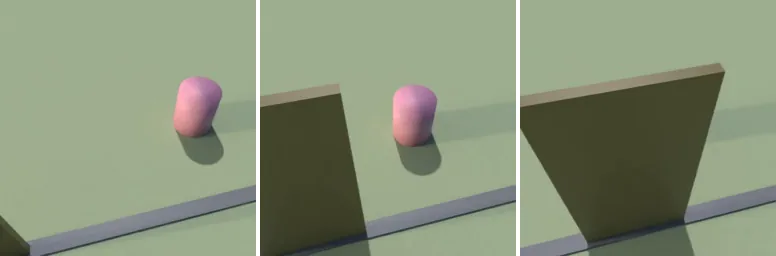
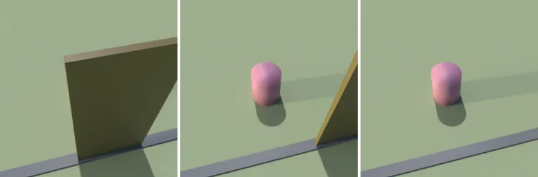
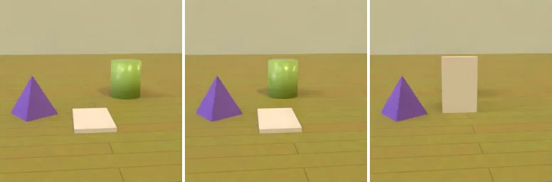
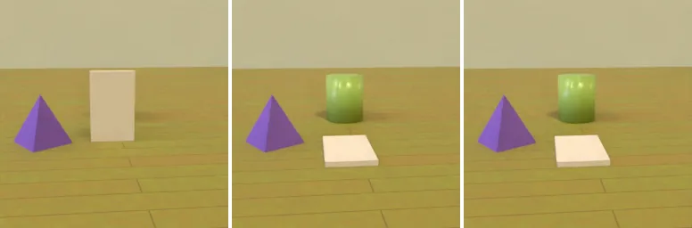
비교한 모델과 학습 조건
| 모델 (표의 행 이름) | 학습 데이터 (무엇을 더 봤나) | 장면 · 영상 | 학습 설정 |
|---|---|---|---|
| 복사 기준선 | 학습 없음. 예측 없이 마지막 문맥 샘플을 미래 자리에 그대로 둔다 | – | – |
| 원래 | 추가 학습 없음 (공개 V-JEPA 2 ViT-H 의 예측 부분) | – | – |
| v3 섞음 | v3 학습 장면 (trapdoor 없음) 에서 무작위 1,600 장면 | 1,600 · 3,200 | 공통 설정 |
| v3 섞음 680 | 같은 방식, 무작위 680 장면 (장면 수 비교용) | 680 · 1,360 | 공통 설정 |
| v3 전부 | v3 학습 장면 전부 (장면 수 비교용) | 7,136 · 14,272 | 공통 설정 |
| trapdoor 25 % | v3 1,200 장면 + trapdoor 400 장면 | 1,600 · 3,200 | 공통 설정 |
| trapdoor 만 | trapdoor 학습 장면 전부 | 1,528 · 3,056 | 공통 설정 |
| VOBench 학습 | VOBench (Unreal) 학습 절반의 가능 영상. 시험과 같은 운동 틀 · 가림 길이 · 배경을 공유한다 | 360 · 720 | 갱신 750 번 · 학습률 최고 5 × 10⁻⁵ (설정이 달라 참고용) |
공통 설정 = 원래 모델의 예측 부분에서 출발 · 갱신 2,000 번 · 한 번에 24 영상 · 같은 학습률 일정 · 영상을 요약하는 부분 (encoder) 은 고정 · 정답 라벨 없음 · 모델마다 한 번씩 학습. 축별 "한 칸만" 모델 16 개 (8 절) 와 대조 실험 모델 3 개 (12 절) 도 같은 설정이다.
시험에 쓴 벤치마크 여덟 개
| 벤치마크 | 만든 곳 | 무엇이 가리나 | 이 페이지에서 세는 쌍 | 쌍 수 |
|---|---|---|---|---|
| v3 시험 | Blender · 학습과 같은 생성기, 다른 장면 (1,719 장면) | v3 의 모든 가림 (trapdoor 제외) | 전체 쌍 · 사라짐 쌍 | 3,438 · 1,719 |
| Blender trapdoor 시험 | Blender · trapdoor 생성기, 다른 장면 (446 장면) | trapdoor | 사라짐 쌍 (전체 쌍은 892) | 446 |
| CLEVRER style | 회색 바닥의 단순 도형 합성 장면 | 다른 물체 · 판 | 전체 쌍 (물체가 정지한 장면 제외) | 612 |
| 움직이는 차 가림 | Unreal · VOBench 와 같은 장면 · 궤적 (원래 이름 VO_moving_occluder) | 지나가는 차 | 사라짐 쌍 | 96 |
| VOBench late | Unreal · 우리 벤치마크 | trapdoor | 사라짐 쌍 | 36 |
| IntPhys 1 영속 가림 | 공개 합성 벤치마크 | 벽 | late 창 180 쌍 중 영속 위반 · 가림 쌍 | 30 |
| IntPhys 2 영속 | 공개 합성 벤치마크 (복잡한 장면) | 여러 가지 | late 창의 영속 쌍 | 120 |
| 실제 촬영 영상 | 직접 찍은 사무실 영상 (독립 영상 20 개) | 상자 · 컵 | 전체 쌍 | 40 |
아래는 사라짐 쌍 예시 세 개다. VOBench late 예시는 1 절 그림, IntPhys 1 · 2 와 실제 영상 예시는 1차 결과 페이지에 있다.
Blender trapdoor 시험
사라짐 쌍 446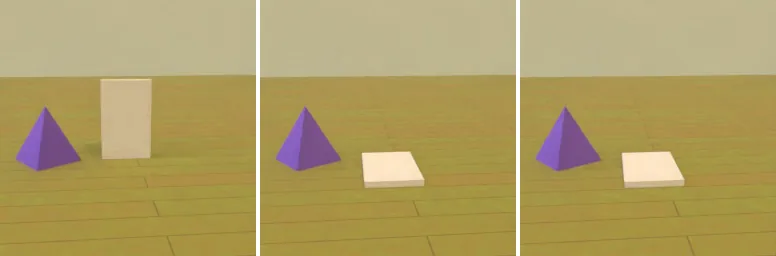
움직이는 차 가림 (Unreal)
사라짐 쌍 96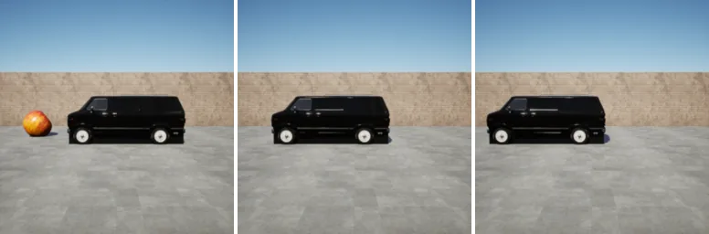
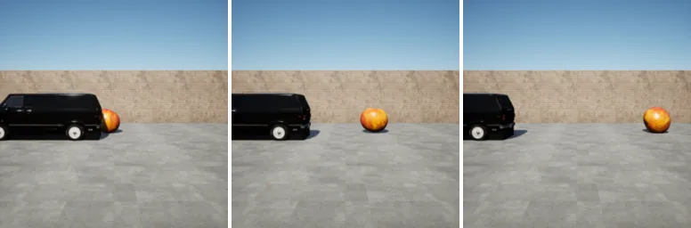
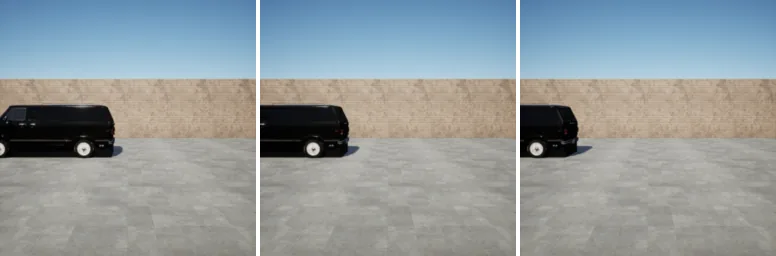
CLEVRER style
전체 쌍 612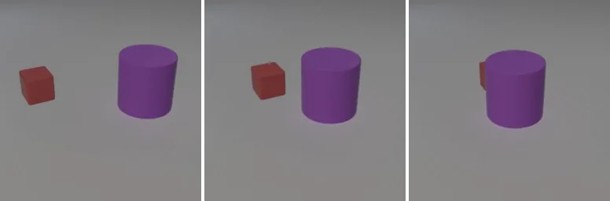
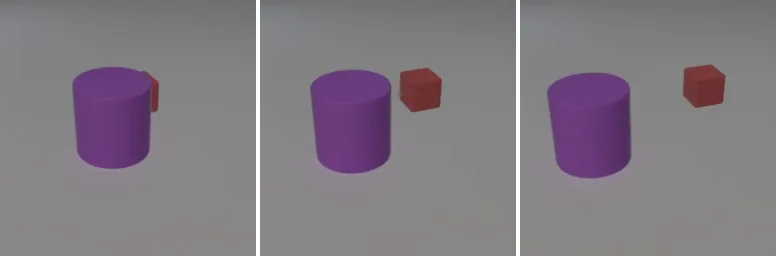
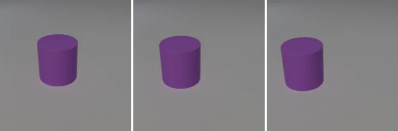
v3 로 학습하면 어떤 벤치마크가 오르나
v3 로 배운 것이 학습에 안 쓴 벤치마크로 옮겨 가는지 보려고.
5 절의 모델들을 6 절의 벤치마크 여덟 개로 채점했다.
| 모델 | 학습 데이터 | v3 시험 | v3 시험 | Blender trapdoor 시험 | CLEVRER style |
|---|---|---|---|---|---|
| 전체 쌍 3,438 | 사라짐 쌍 1,719 | 사라짐 쌍 446 | 전체 쌍 612 | ||
| 복사 기준선 | 학습 없음 · 예측 없음 | 62.3 | 31.8 | 43.5 | 65.5 |
| 원래 | 추가 학습 없음 | 58.9 | 18.4 | 36.3 | 51.3 |
| v3 섞음 | v3 무작위 1,600 장면 | 88.0 | 76.0 | 62.8 | 82.5 |
| trapdoor 25 % | v3 1,200 + trapdoor 400 장면 | 87.9 | 75.8 | 80.3 | 79.6 |
| trapdoor 만 | trapdoor 1,528 장면 | 73.2 | 46.8 | 86.8 | 64.2 |
| VOBench 학습 | VOBench 학습 절반 (참고) | 74.4 | 48.9 | 52.5 | 77.0 |
| 모델 | 학습 데이터 | 움직이는 차 가림 | VOBench late | IntPhys 1 | IntPhys 2 | 실제 영상 |
|---|---|---|---|---|---|---|
| 사라짐 쌍 96 | 사라짐 쌍 36 | 영속 가림 30 | 영속 120 | 전체 40 | ||
| 복사 기준선 | 학습 없음 · 예측 없음 | 78.1 | 41.7 | 63.3 | 50.8 | 55.0 |
| 원래 | 추가 학습 없음 | 18.8 | 13.9 | 53.3 | 59.2 | 47.5 |
| v3 섞음 | v3 무작위 1,600 장면 | 35.4 | 16.7 | 60.0 | 58.3 | 50.0 |
| trapdoor 25 % | v3 1,200 + trapdoor 400 장면 | 36.5 | 22.2 | 56.7 | 59.2 | 52.5 |
| trapdoor 만 | trapdoor 1,528 장면 | 56.3 | 27.8 | 56.7 | 61.7 | 47.5 |
| VOBench 학습 | VOBench 학습 절반 (참고) | 77.1 | 100.0 | 63.3 | 60.0 | 50.0 |
- v3 시험 전체 쌍: v3 섞음만 맞힌 쌍 1,011 개 대 원래만 맞힌 쌍 11 개. 확실 측정
- 장면 수는 680 개면 충분하다. v3 시험 전체 쌍: v3 섞음 680 87.8 · v3 섞음 88.0 · v3 전부 88.6 %. 측정
- CLEVRER style: trapdoor 25 % 가 v3 섞음보다 2.9 %p 낮다 (한쪽만 맞힘 5 대 23). 확실히 낮음 측정 trapdoor 때문인지, v3 장면이 1,200 개로 줄어서인지는 못 가른다.
- VOBench late: trapdoor 만이 v3 섞음보다 4 쌍 더 맞힌다 (4 대 0). 불확실 측정
v3 로 배운 것은 Blender · 단순 도형 장면까지 옮겨 간다. 측정
VOBench late, 공개 벤치마크, 실제 영상으로는 거의 안 옮겨 간다. 측정
VOBench late 사라짐 쌍에서는 복사 기준선 (41.7 %) 이 모든 Blender 학습 모델보다 높다. 측정
v3 안에서는 무엇이 옮겨 가나
어떤 조건을 배우면 다른 조건으로도 옮겨 가는지 알면, 학습 데이터를 무엇으로 채울지 정할 수 있다.
축마다 그 축의 한 조건만 담은 1,600 장면으로 모델을 하나씩 학습했다 (예: 카메라 축 = 정면만 · 측면만 · 위에서만, 모델 3 개).
- 배운 칸 이득 = 배운 조건의 시험 쌍에서 오른 정답률 (원래 모델 대비 %p).
- 밖 칸 이득 = 같은 축의 다른 조건 시험 쌍에서 오른 정답률.
- 전이율 = 밖 칸 이득 ÷ 배운 칸 이득. 판정: 80 % 이상 = 옮겨 감, 30 % 이하 = 안 옮겨 감, 그 사이 = 일부.
| 축 · 학습한 모델들 | 배운 칸 이득 | 밖 칸 이득 | 전이율 | 판정 |
|---|---|---|---|---|
| 물체 모양: 기본 도형만 · 실제 물건만 | +27.2 | +25.6 | 94 % | 옮겨 감 |
| 가림 길이: 짧게만 · 길게만 | +26.7 | +20.8 | 78 % | 일부 |
| 카메라: 정면만 · 측면만 · 위에서만 | +28.7 | +21.8 | 76 % | 일부 |
| 가림 종류: 가림막만 · 물체만 · trapdoor 만 | +29.2 | +16.6 | 57 % | 일부 |
| 물체 움직임: 움직임만 · 정지만 | +27.2 | +15.4 | 56 % | 일부 |
| 가림 움직임: 고정만 · 움직임만 | +33.8 | +15.8 | 47 % | 일부 |
| 장소: 평지만 · 빗면만 | +33.7 | +9.0 | 27 % | 안 옮겨 감 |
물체 모양 · 카메라 같은 겉모양 축은 대부분 옮겨 간다. 측정
장소 (평지 ↔ 빗면) 처럼 움직임 자체가 바뀌는 축은 거의 안 옮겨 간다. 측정
빗면은 속도가 바뀌는 운동이라 평지에서 배운 것이 덜 맞는다고 본다. 추측
VOBench 학습은 VOBench late 를 100 % 맞히는데, v3 학습은 왜 v3 시험 사라짐 쌍에서 76 % 에 머무나
사라짐 쌍에서 모델이 물체를 엉뚱한 자리에 예측했다고 하자. 이론
가능 영상 벌점 두 곳: 예측 자리에는 물체가 없고, 진짜 자리에는 예측이 비어 있다.
불가능 영상 벌점 한 곳: 예측 자리에 물체가 없을 뿐이다.
그래서 자리가 크게 틀리면 가능 영상에 더 놀라고 오답이 된다. 이론
나타남 쌍은 문맥에 물체가 없어 예측도 비어 있으니 자리와 상관없이 맞는다. 이론
자리를 맞히기 어려운 쌍일수록 틀린다. 측정
| 모델 | 학습 데이터 | 물체 정지 | 물체 움직임 | 평지 | 빗면 | 짧은 가림 | 긴 가림 | 미래 튜블릿 1–2 에 재등장 | 튜블릿 5–7 에 재등장 |
|---|---|---|---|---|---|---|---|---|---|
| (457) | (1,262) | (1,231) | (488) | (1,082) | (637) | (838) | (268) | ||
| 복사 기준선 | 학습 없음 | 33.5 | 31.2 | 37.6 | 17.2 | 41.8 | 14.9 | 37.9 | 18.7 |
| 원래 | 추가 학습 없음 | 50.3 | 6.9 | 25.0 | 1.8 | 25.2 | 6.9 | 23.3 | 7.1 |
| v3 섞음 | v3 무작위 1,600 장면 | 96.7 | 68.5 | 84.6 | 54.3 | 83.5 | 63.1 | 83.3 | 57.1 |
| VOBench 학습 | VOBench 학습 절반 | 74.6 | 39.5 | 59.7 | 21.5 | 62.4 | 25.9 | 62.6 | 23.5 |
v3 의 미래 경로는 토큰 단위로 꽤 정형적이다. 측정
- 궤적을 정하는 값 (속도 · 방향 · 마찰 · 빗면 각도 · 가림 시점) 은 범위 안에서 연속으로 무작위로 뽑는다.
- 하지만 카메라가 가림 자리를 늘 화면 가운데에 둔다. 문맥 끝 물체 위치는 (128, 127) 픽셀, 표준편차는 13 × 9 픽셀로 1 토큰보다 작다.
- 그래서 화면 위 경로가 서로 비슷하다. 아래 네 잣대로 쟀다. 물체 위치 = 라벨에 기록된 물체 중심이다 (가려진 동안도 있다).
- 경로 일치 = 시험 장면 미래의 물체 토큰 칸 순서가 학습 장면 중 하나와 똑같다. 튜블릿 8 개 단위와 샘플 16 개 단위 두 가지로 셌다.
- 끝 칸 일치 = 마지막 샘플에서 물체가 있는 토큰 칸이 학습 장면들의 끝 칸 중에 있다.
- 틀 궤적 오차 = 학습 장면을 (방향 × 운동 종류) 로 묶어 미래 궤적을 평균한 뒤, 그 평균으로 시험 장면의 미래 위치를 맞혔을 때의 평균 거리. 속도 크기는 안 쓴다. 방향 = 문맥에서 가로로 움직인 쪽 (왼쪽 · 오른쪽 · 정지). 운동 종류 = 장소 × 빗면 방향 × 물체 움직임 (묶음 8–9 개). 상대 = 문맥 끝 위치에서 출발한 평균 궤적, 절대 = 화면 위치 그대로의 평균 궤적.
- 등속 외삽 오차 = 마지막으로 보인 두 샘플의 속도로 곧게 이었을 때의 평균 거리.
| 잣대 | v3 · 전체 (1,719) | v3 · 물체 움직임 (1,262) | trapdoor · 전체 (446) | trapdoor · 물체 움직임 (296) |
|---|---|---|---|---|
| 경로 일치, 튜블릿 8 개 (%) | 63.0 | 49.6 | 63.2 | 44.6 |
| 경로 일치, 샘플 16 개 (%) | 47.8 | 28.9 | 55.4 | 32.8 |
| 끝 칸 일치 (%) | 99.9 | 99.9 | 98.7 | 98.0 |
| 틀 궤적 오차, 상대 (토큰) | 1.06 | 1.44 | 0.91 | 1.36 |
| 틀 궤적 오차, 절대 (토큰) | 1.33 | 1.56 | 1.23 | 1.45 |
| 등속 외삽 오차 (토큰) | 2.27 | 3.09 | 1.76 | 2.65 |
먼저 보고된 값 (경로 일치 49 · 38 %, 끝 칸 99 · 94 %, 틀 궤적 1.24 · 1.07 토큰, 등속 3.11 · 2.30 토큰) 과 정의만 조금 다르고 크기는 같다.
경로가 학습에 있으면 더 맞히지만, 있어도 75 % 다. 측정
| 모델 | 학습 데이터 | 경로 일치 | 경로 불일치 | 틀 궤적 오차 ≤ 0.5 토큰 | 0.5–1.5 토큰 | > 1.5 토큰 |
|---|---|---|---|---|---|---|
| (626) | (636) | (200) | (539) | (523) | ||
| 원래 | 추가 학습 없음 | 10.7 | 3.1 | 6.0 | 3.5 | 10.7 |
| v3 섞음 | v3 무작위 1,600 장면 | 74.8 | 62.3 | 79.5 | 69.4 | 63.3 |
| trapdoor 25 % | v3 1,200 + trapdoor 400 장면 | 74.8 | 61.5 | 79.0 | 67.0 | 65.0 |
| VOBench 학습 | VOBench 학습 절반 | 46.2 | 33.0 | 61.5 | 39.3 | 31.4 |
자리를 맞히기 쉬운 쌍 (정지한 물체, 틀 궤적에 가까운 쌍) 은 잘 맞히고, 어려운 쌍에서 틀린다. 측정
경로가 학습에 있으면 정답률이 오른다 (62.3 → 74.8 %). 측정
하지만 경로가 학습에 있어도 75 % 다. 그러니 v3 의 실패를 "외울 수 없어서" 로만 볼 수는 없다. 측정
남은 원인 후보는 토큰보다 작은 위치 차이, 재등장할 때 물체가 얼마나 보이는지, 학습 양 (갱신 2,000 번) 이다. 추측
VOBench late 시험 사라짐 36 쌍 중 32 쌍은 운동 틀 · 가림 길이 · 배경이 같은 장면이 학습에 있다. 장면 이름으로 센 것이고 궤적 좌표는 맞춰 보지 않았다. 측정
VOBench 학습의 100 % 는 이 겹침 덕일 수 있다. 추측
trapdoor 를 배웠는데 왜 VOBench late 로 안 옮겨 가나
trapdoor 만 모델은 Blender trapdoor 시험 사라짐 쌍을 86.8 % 맞히는데 VOBench late 사라짐 쌍은 27.8 % 다. 두 벤치마크의 무엇이 다른지 찾으려고.
두 벤치마크 모두 같은 장면의 "물체 있음" · "물체 없음" 영상이 있다. 두 영상의 픽셀 차가 곧 물체다. 그래서 라벨 없이 같은 잣대로 잴 수 있다. 그다음 쌍을 "정지 · 움직임" 과 "VOBench 와 같은 조건" 으로 나눠 정답률을 비교했다.
VOBench late 는 기하로는 오히려 쉬운 쪽이다. 측정
| 잣대 | VOBench late | Blender trapdoor | VOBench late 가 |
|---|---|---|---|
| 가림 길이 (샘플) | 4 (2–6) | 6 (3–13) | 더 짧다 · 쉬움 |
| 재등장 시점 (샘플, 미래 = 16–31) | 18 (17–19) | 20 (17–26) | 더 이르다 · 쉬움 |
| 등속 외삽 오차 (픽셀) | 4 (0–10) | 14 (0–80) | 더 작다 · 쉬움 |
| 물체 크기 (픽셀) | 30 (27–33) | 41 (29–61) | 더 작다 |
| 판 넓이 ÷ 물체 넓이 | 4.8 (2.7–10.3) | 2.4 (0.7–8.1) | 판이 상대적으로 크다 |
정지한 물체는 어디서나 맞히고, 움직이는 물체는 학습한 데이터에서만 맞힌다. 측정
| 모델 | 학습 데이터 | Blender trapdoor 시험 | VOBench late | 움직이는 차 가림 | ||||
|---|---|---|---|---|---|---|---|---|
| 정지 · 가까이 (231) | 움직임 (187) | 움직임 · VOBench 조건 (34) | 정지 (6) | 움직임 (30) | 정지 (24) | 움직임 (72) | ||
| 복사 기준선 | 학습 없음 | 59.7 | 26.7 | 32.4 | 66.7 | 36.7 | 62.5 | 83.3 |
| 원래 | 추가 학습 없음 | 61.9 | 10.2 | 5.9 | 83.3 | 0.0 | 54.2 | 6.9 |
| v3 섞음 | v3 무작위 1,600 장면 | 84.4 | 40.6 | 35.3 | 100 | 0.0 | 100 | 13.9 |
| trapdoor 25 % | v3 1,200 + trapdoor 400 장면 | 90.9 | 70.6 | 76.5 | 100 | 6.7 | 100 | 15.3 |
| trapdoor 만 | trapdoor 1,528 장면 | 94.4 | 79.1 | 97.1 | 100 | 13.3 | 83.3 | 47.2 |
| VOBench 학습 | VOBench 학습 절반 | 71.9 | 29.9 | 50.0 | 100 | 100 | 70.8 | 79.2 |
움직이는 차 가림의 움직임 칸은 복사 기준선이 83.3 % 로 높다. 이 칸은 예측 없이도 잘 풀리는 칸이다. 측정
가림 시점 · 자리 난이도 · 판 크기 · 물체 크기는 이유가 아니다. Blender trapdoor 시험에서 VOBench 조건의 움직이는 쌍은 trapdoor 만 모델이 97.1 % 를 맞힌다. 측정
같은 조건에 작은 물체 (35 픽셀 이하) 만 고르면 100 %, 큰 판 (판 ÷ 물체 3.5 이상) 만 고르면 96.2 % 다. 측정
정지한 물체를 지우지 않는 것은 어느 쪽으로 학습해도 옮겨 간다. 측정
움직이는 물체를 새 자리에 놓는 것은 학습한 데이터 밖으로 잘 안 옮겨 간다. Blender 학습 모델 → VOBench late 움직임 0–13 %. 거꾸로 VOBench 학습 → Blender trapdoor 움직임 29.9 %. 측정
무엇이 학습 데이터에 묶여 있는지 (겉모양 · 움직임이 화면에 보이는 모습 · 궤적) 는 아직 모른다. 추측
VOBench 학습 모델은 왜 Blender 시험에서 잘 되는 것처럼 보이나
두 숫자만 보면 한쪽으로만 옮겨 가는 것처럼 보였다.
| 학습 → 시험 | 원래 | 학습 후 |
|---|---|---|
| VOBench 학습 → v3 시험 전체 쌍 (3,438) | 58.9 | 74.4 |
| Blender 학습 모델 → VOBench late 사라짐 쌍 (36) | 13.9 | 17–28 |
사라짐 쌍을 두 종류로 나눴다.
- 쉬운 쌍 = 물체가 정지한 채로 가려진다. 가림이 끝나면 그 자리에 다시 두면 된다.
- 어려운 쌍 = 물체가 움직이다 가려진다. 가려진 동안 움직인 만큼 새 자리에 놓아야 한다.
같은 종류의 쌍끼리 두 방향을 비교했다.
| 학습 → 시험 | 쉬운 쌍 (정지) | 어려운 쌍 (움직임) |
|---|---|---|
| VOBench 학습 → Blender trapdoor 시험 | 71.9 (61.9) | 29.9 (10.2) |
| Blender 학습 모델 → VOBench late | 100 (83.3) | 0–13 (0) |
두 방향 모두 같은 모양이다. 쉬운 쌍은 옮겨 가고, 어려운 쌍은 둘 다 30 % 이하다. 측정
그런데 두 벤치마크는 쉬운 쌍의 비율이 다르다. Blender trapdoor 시험은 절반 (52 %) 이 쉬운 쌍이고, VOBench late 는 6 개 중 1 개 (17 %) 다. 측정
확인 계산: Blender 시험의 쉬운 쌍 비율을 VOBench 처럼 17 % 로 맞추면, VOBench 학습 모델의 점수는 0.17 × 71.9 + 0.83 × 29.9 ≈ 37 % 다. Blender 학습 모델의 VOBench late 점수 (17–28 %) 와 비슷해진다. 측정
VOBench 학습이 더 오래 학습한 것도 아니다. 갱신 750 번으로 Blender 학습 모델 (2,000 번) 보다 적다.
머리 숫자의 차이는 시험 구성의 차이다. 한쪽으로만 옮겨 가는 것이 아니다. 측정
정지한 물체를 다시 두는 것은 어느 쪽으로든 옮겨 간다. 움직이는 물체를 새 자리에 두는 것은 어느 쪽으로도 잘 안 옮겨 간다. 움직임 칸에서 VOBench 학습 쪽이 조금 낫지만 (30 % 대 0–13 %), 둘 다 낮다. 측정
"비슷한 것만 모으면 풀리나" · "외우면 100 % 가 되나"
v3 전체를 섞으면 장면이 너무 다양해서 VOBench late 로 안 옮겨 갈 수도 있다. 그렇다면 VOBench 와 닮은 장면만 모아 학습하면 풀려야 한다. 그리고 다시 나올 자리를 아예 외울 수 있으면 v3 시험 사라짐 쌍이 100 % 가 되는지도 본다.
공통 설정 (5 절) 그대로, 학습 데이터만 바꾼다. 장면 수가 적을수록 같은 영상을 더 자주 본다. ① → ② → ③ 차례로 학습하고, ① 은 끝나자마자 VOBench late · 움직이는 차 가림 · Blender trapdoor 시험만 먼저 채점한다.
| 모델 | 학습 데이터 | 비교 모델 | 오르면 | 안 오르면 | 상태 |
|---|---|---|---|---|---|
| ① VOBench 닮은 조각만 | trapdoor · 정면 카메라 · VOBench 와 같은 재등장 타이밍 (가림 시작 샘플 13–15, 끝 16–18) 인 trapdoor 학습 장면 전부 (389 장면 · 778 영상) | trapdoor 만 · VOBench 학습 | 섞어서 안 옮겨 간 것이 원인 | 닮은 Blender 장면으로도 안 된다 → 학습 데이터에 묶인 무언가 | 안 오름 |
| ② 타이밍만 맞춤 | 재등장 타이밍만 VOBench 와 같은 v3 1,200 + trapdoor 400 장면 | trapdoor 25 % (같은 구성) | 재등장 타이밍 분포가 원인 | 타이밍은 원인이 아니다 | 대기 |
| ③ 시험 장면 외우기 (상한) | v3 시험 1,719 장면 + Blender trapdoor 시험 446 장면의 가능 영상 그대로 (2,165 장면 · 4,330 영상) | v3 섞음 · trapdoor 25 % | v3 시험 사라짐이 100 % 에 가까우면 "자리를 알면 풀린다" | 자리를 알아도 안 된다 → 다른 원인 (9 절) | 대기 |
| 모델 | 학습 데이터 | VOBench late 움직임 (30) | VOBench late 정지 (6) | 움직이는 차 가림 움직임 (72) | Blender trapdoor 움직임 · VOBench 조건 (34) |
|---|---|---|---|---|---|
| 원래 | 추가 학습 없음 | 0.0 | 83.3 | 6.9 | 5.9 |
| trapdoor 만 | trapdoor 1,528 장면 | 13.3 | 100 | 47.2 | 97.1 |
| ① VOBench 닮은 조각만 | trapdoor · 정면 · VOBench 타이밍 389 장면 | 10.0 | 100 | 54.2 | 88.2 |
| VOBench 학습 | VOBench 학습 절반 | 100 | 100 | 79.2 | 50.0 |
가림 종류 · 카메라 · 재등장 타이밍을 VOBench 에 맞춘 Blender 장면만 배워도, VOBench late 의 움직이는 물체는 trapdoor 만 모델과 같은 수준 (10–13 %) 이다. "v3 를 섞어서 못 외웠다" 는 원인이 아니다. 측정
③ 은 시험 장면을 학습에 넣은 상한 실험이다. 일반화 수치로 읽지 않는다.
예측은 속도로 자리를 계산하나, 자리를 외우나
움직이는 물체가 안 옮겨 가는 이유로 두 설명이 남았다. (가) 예측기가 속도로 자리를 계산하지 않고 학습 데이터의 자리를 외운다. (나) 다른 장면에서는 움직이는 물체가 encoder 에서 달라 보여서 못 알아본다. (나) 라면 겉모양이 같은 학습 데이터 안에서는 속도를 바꿔도 따라가야 한다.
- 예측이 물체를 둔 자리 = 같은 장면의 "물체 있는 문맥" 과 "물체 없는 문맥" 으로 각각 예측을 내고, 두 예측이 가장 크게 다른 3 × 3 토큰 칸. 참 자리는 같은 방법을 실제 미래에 적용해 얻는다. 학습된 판독기는 없다. 마지막 미래 튜블릿에서 본다.
- 속도 바꾸기 = 같은 영상에서 문맥 끝 프레임은 그대로 두고 프레임 간격만 줄인다. 화면 속도가 VOBench late 는 1/3, Blender trapdoor 는 1/2 이 된다. 렌더는 새로 안 했다.
- 속도 따라감 = (원래 속도의 예측 자리 − 느린 속도의 예측 자리) ÷ (원래 속도의 참 자리 − 느린 속도의 참 자리), 참 이동 방향으로 잰다. 1 = 속도를 따라 계산, 0 = 속도와 상관없이 같은 자리. 참 자리 차가 1.5 토큰 이상인 장면만, 중앙값과 95 % 구간.
속도를 바꾸면 참 자리는 4 토큰 움직이는데, 예측 자리는 어느 모델도 따라가지 않는다. 측정
| 모델 | 학습 데이터 | VOBench late (속도 1/3 vs 1) | Blender trapdoor (속도 1/2 vs 1) |
|---|---|---|---|
| 원래 | 추가 학습 없음 | 0.00 [−2.25, 0.00] | 0.00 [0.00, 0.00] |
| v3 섞음 | v3 무작위 1,600 장면 | −0.50 [−1.33, −0.14] | 0.00 [0.00, 0.00] |
| trapdoor 25 % | v3 1,200 + trapdoor 400 장면 | −0.13 [−0.60, 0.25] | 0.00 [0.00, 0.00] |
| trapdoor 만 | trapdoor 1,528 장면 | 0.00 [−0.08, 0.28] | 0.00 [0.00, 0.00] |
| ① VOBench 닮은 조각만 | trapdoor · 정면 · VOBench 타이밍 389 장면 | −0.17 [−0.53, 0.17] | 0.00 [0.00, 0.00] |
| VOBench 학습 | VOBench 학습 절반 | 0.07 [0.00, 0.25] | 0.00 [0.00, 0.00] |
Blender 쪽에서 예측 자리가 바뀐 거리는 중앙값 1 토큰이다 (참 4.1 토큰).
원래 속도에서는, 학습한 데이터에서만 물체를 맞는 자리에 둔다. 측정
| 모델 | 학습 데이터 | VOBench late | Blender trapdoor |
|---|---|---|---|
| 원래 | 추가 학습 없음 | 0 (6.7) | 4 (6.1) |
| v3 섞음 | v3 무작위 1,600 장면 | 0 (3.1) | 46 (6.3) |
| trapdoor 25 % | v3 1,200 + trapdoor 400 장면 | 13 (6.7) | 62 (7.3) |
| trapdoor 만 | trapdoor 1,528 장면 | 27 (6.0) | 69 (7.9) |
| ① VOBench 닮은 조각만 | trapdoor · 정면 · VOBench 타이밍 389 장면 | 13 (7.0) | 55 (7.3) |
| VOBench 학습 | VOBench 학습 절반 | 97 (10.7) | 28 (9.9) |
파랑 = 60 % 이상, 주황 = 30 % 이하 (강조용).
(가) 쪽이다. 겉모양이 같은 Blender 안에서도 속도만 바꾸면 예측 자리가 따라가지 않는다 (따라감 0.00). 그러니 (나) 만으로는 설명되지 않는다. 측정
예측은 물체를 속도로 계산한 자리가 아니라, 장면 배치와 학습 데이터로 정해진 자리에 둔다. 학습 데이터 안에서는 그 자리가 맞아서 정답이 나온다. 속도나 장면이 바뀌면 틀린다. 측정
Blender 학습 모델은 VOBench 의 움직이는 물체를 참 자리 (10.3 토큰 앞) 보다 덜 간 곳 (3–7 토큰) 에 둔다. VOBench 학습 모델은 Blender 에서 참 자리 (8.0) 보다 더 간 곳 (9.9) 에 둔다. 각자 학습한 데이터의 이동 거리 쪽으로 쏠린다고 본다. 측정 추측
그래서 고칠 곳은 "자리를 외울 수 없게 하는 학습" 이다. 이전에 VOBench 로 시간 척도 · 화면 위치를 흩뜨린 PFT 가 끝 자리 외우기를 반쯤 줄이고 학습 생성기 밖 IntPhys late 를 올린 적이 있다 (2026-10-30, seed 1 개). 측정
아직 모르는 것
각 모델을 한 번씩만 학습했다. 갱신은 2,000 번으로 1차 결과 (4,000 번) 의 절반이다.
쌍이 적은 벤치마크가 있다. VOBench late 사라짐 쌍 36 개 (정지 6), IntPhys 1 영속 가림 30 개, 실제 영상 40 개 (독립 영상은 20 개). 작은 차이는 안 보인다.
"움직이는 물체가 학습한 데이터 밖으로 안 옮겨 간다" 의 원인 (겉모양 · 움직임 모습 · 궤적) 은 아직 가르지 않았다.
v3 시험 움직이는 물체 사라짐 쌍에서, 경로가 학습에 있어도 25 % 를 틀리는 이유는 아직 모른다.
- 대조 실험 ②③ 결과를 12 절에 채운다.
- 자리를 외울 수 없게 시간 척도 · 화면 위치를 흩뜨린 PFT 로, 속도 따라감 0.7 이상 · VOBench late 움직임 사라짐 쌍 상승을 노린다 (13 절).
- ① 이 안 오르면: VOBench late 움직이는 물체 30 쌍에서 모델의 예측이 물체를 어디에 두는지 (또는 지우는지) 토큰 단위로 본다.